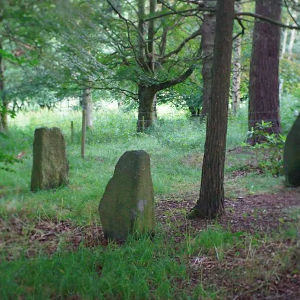

Search Results

Wikipedia: Cragmoor Forest
Cragmoor Forest is a remote, densely wooded area located in the northeastern United States, spanning approximately 2,400...
Open Link
Wikipedia: Hollowridge Plateau
Hollowridge Plateau is an elevated landform situated approximately two kilometers northwest of Grayhaven Village...
Open Link
Silverpine Clearing
Silverpine Clearing is a small natural depression located within the Ashenvale Forest Reserve of northern Vermont, United...
Open Link